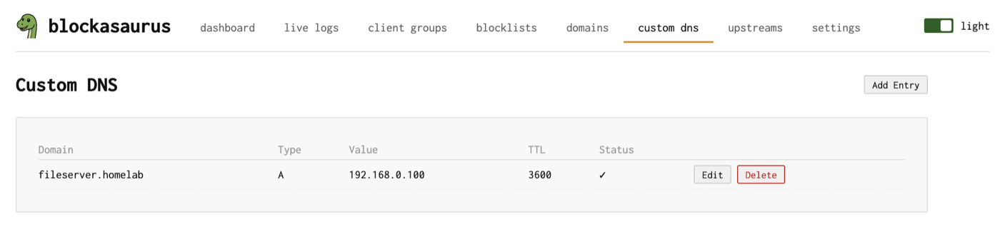
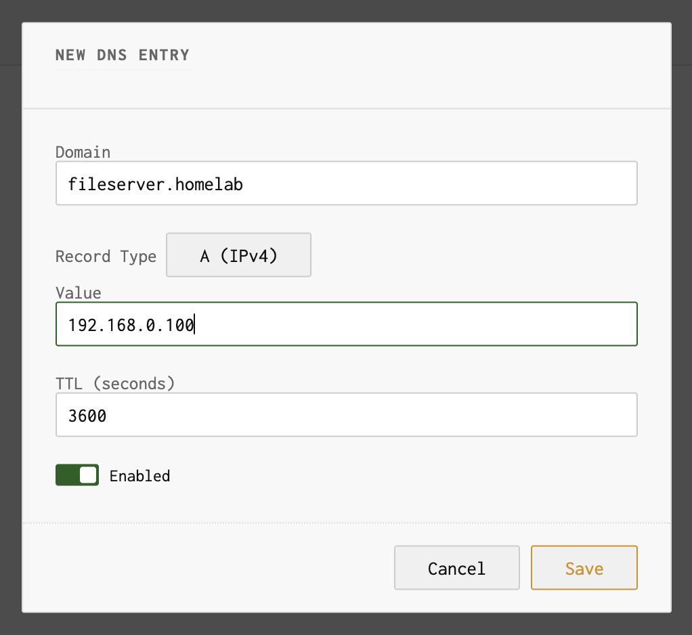

Custom DNS
Create DNS records for internal hosts and services
The Custom DNS page lets you create A, AAAA, and CNAME
records for hosts on your local network. This turns blockasaurus into
a lightweight authoritative DNS server for your internal names —
no need for a separate DNS zone or /etc/hosts file on every
machine.
The Custom DNS Page

Supported Record Types
| Type | Value | Example |
|---|---|---|
| A | IPv4 address | nas.home → 192.168.1.50 |
| AAAA | IPv6 address | nas.home → fd12::50 |
| CNAME | Alias to another domain | git.home → nas.home |
Adding a Record
Click “Add Entry” to open the add dialog.

Fields
| Field | Description |
|---|---|
| Domain | The hostname to respond to (e.g., printer.home) |
| Type | A, AAAA, or CNAME |
| Value | IP address (A/AAAA) or target domain (CNAME) |
| TTL | Time-to-live in seconds (how long clients cache this record). Default: 3600 (1 hour) |
Use Cases
Name Your Home Network Devices
Give friendly names to devices on your LAN without configuring each machine’s hostname:
| Domain | Type | Value |
|---|---|---|
nas.home | A | 192.168.1.50 |
printer.home | A | 192.168.1.30 |
plex.home | A | 192.168.1.51 |
grafana.home | CNAME | nas.home |
Service Aliases with CNAME
Use CNAME records to create aliases for services running on the same host. When the host’s IP changes, you only update one A record:
server.home A 192.168.1.10
grafana.home CNAME server.home
prometheus.home CNAME server.home
gitea.home CNAME server.homeSplit-Horizon DNS
Return internal IPs for domains that resolve differently from outside your network. Useful when you self-host services behind a reverse proxy:
| Domain | Type | Value | Note |
|---|---|---|---|
nextcloud.example.com |
A | 10.0.0.5 |
Internal IP, skips hairpin NAT |
Custom DNS records take priority over upstream resolution. If you
create an A record for google.com, clients on your
network will get your custom IP instead of Google’s real address.
Editing and Deleting
Each record has Edit and Delete buttons. Records can also be toggled on and off without deleting them — useful for temporary overrides.
Remember to click Apply in the header after making changes. Custom DNS changes are staged until you apply.